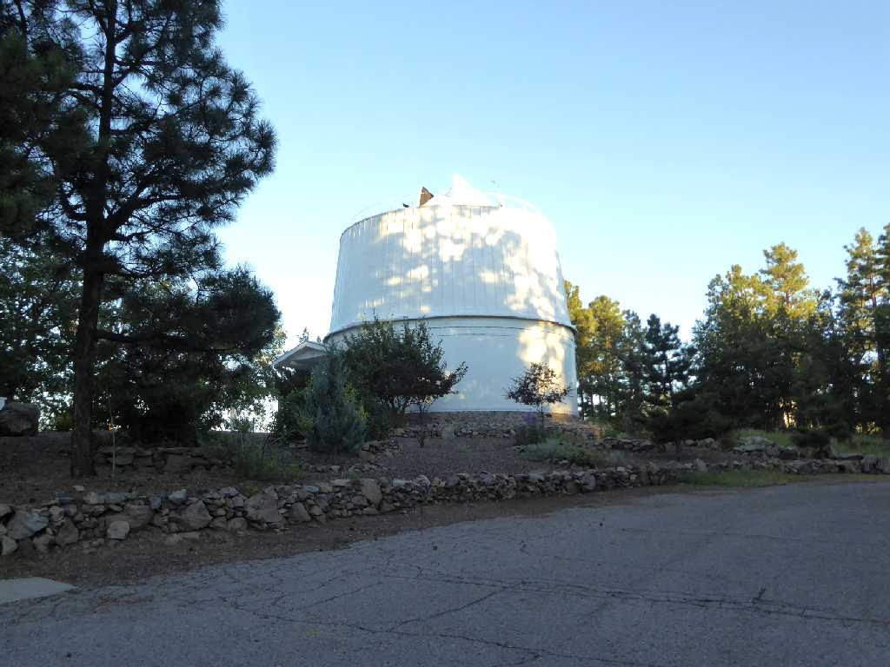
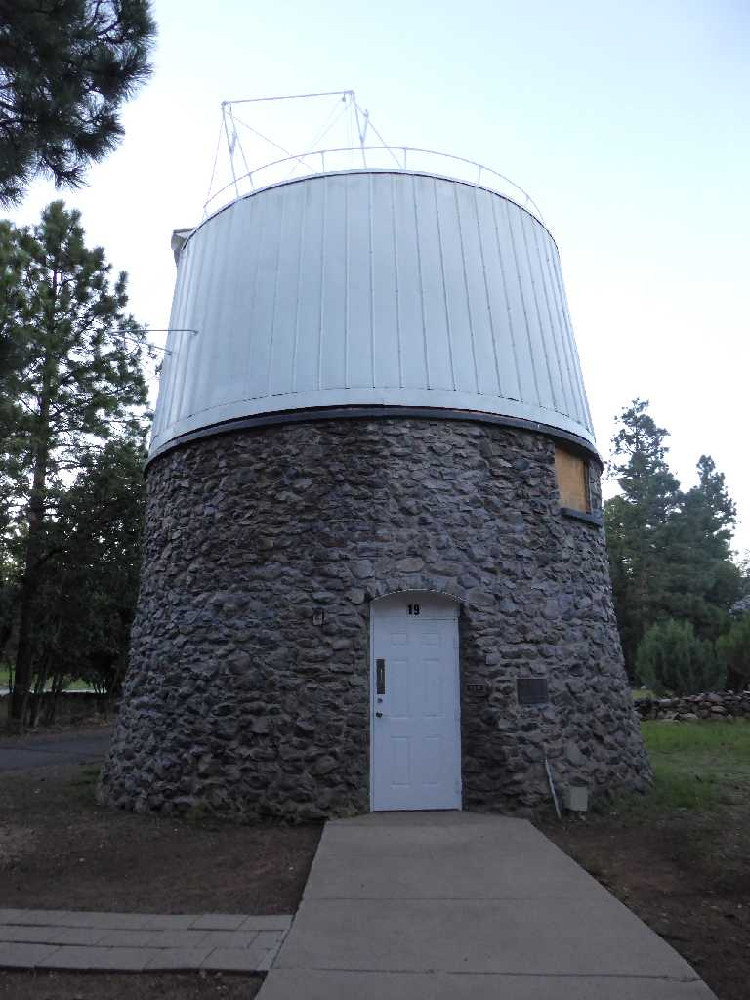
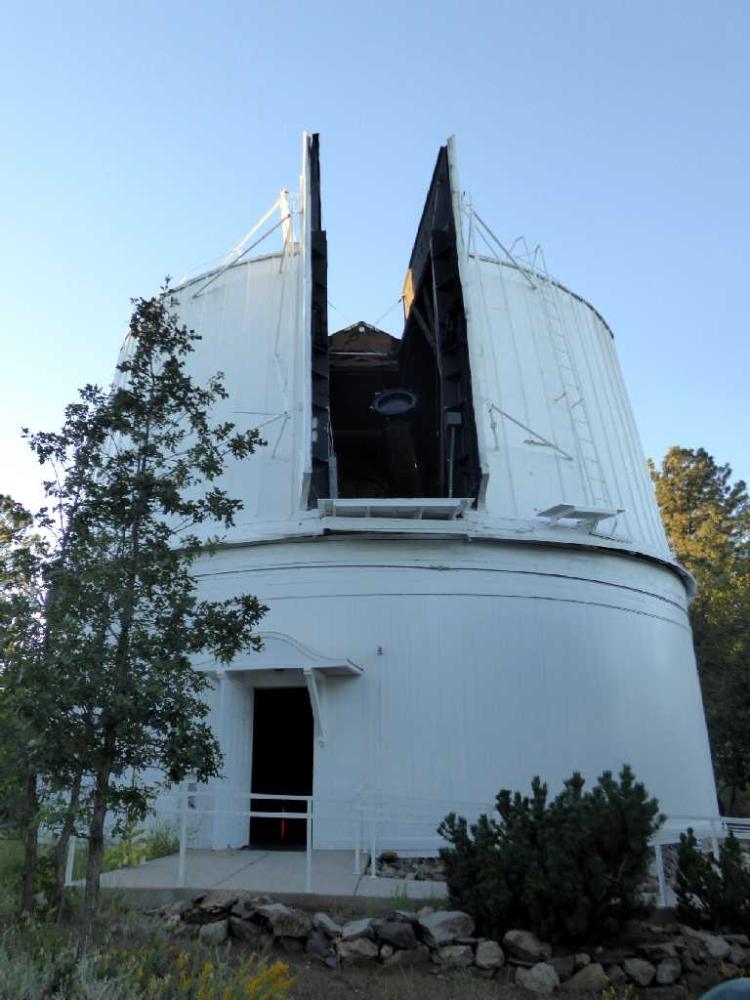
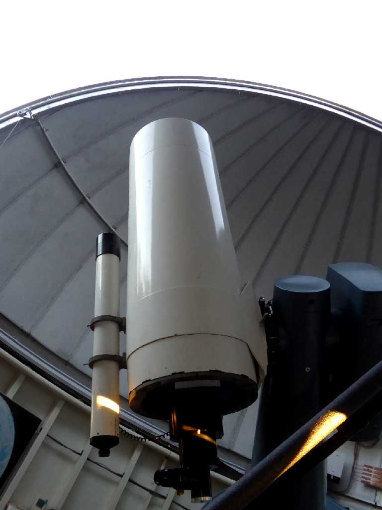
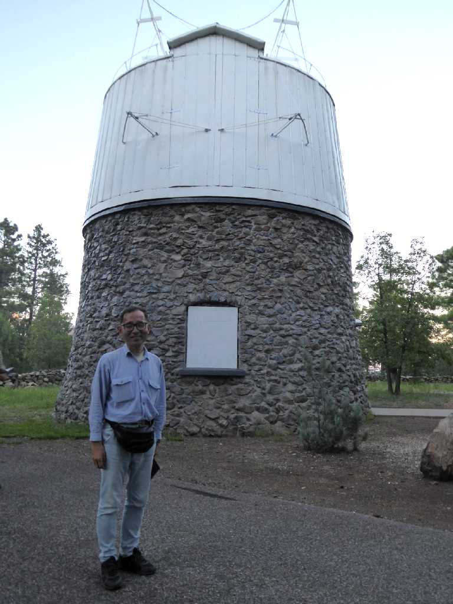

24inch Clark Telescope Dome Lowell Observatory
ローウェル天文台

13inch Pluto Discovery Telescope Dome
１９３０年冥王星を発見した望遠鏡ドーム

16inch Classical Cassegrain Mcallister Telescope
土星観測を公開していた

August 22 2017 Lowell Observatory